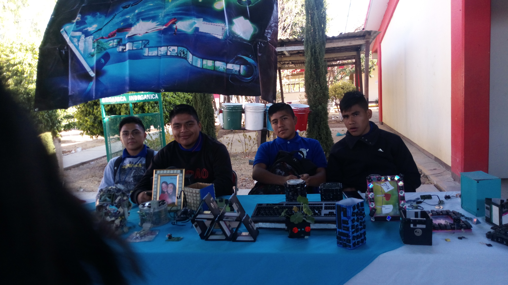
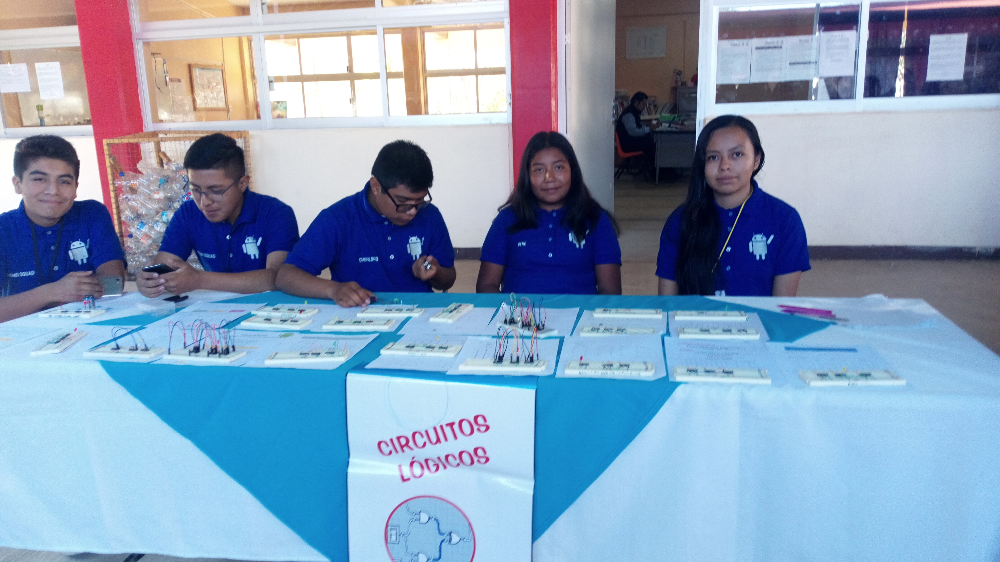
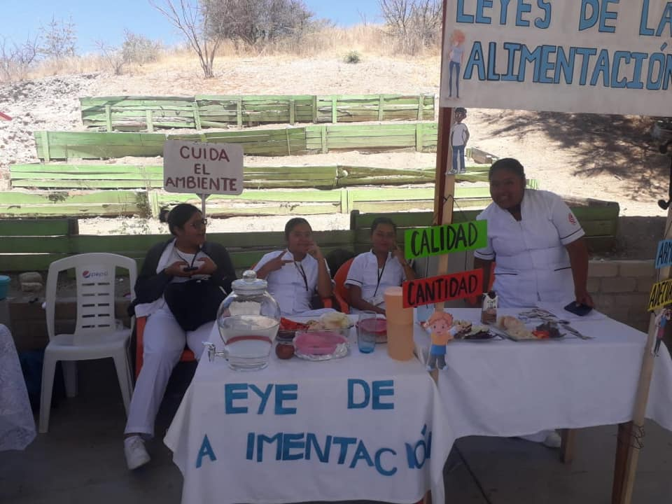
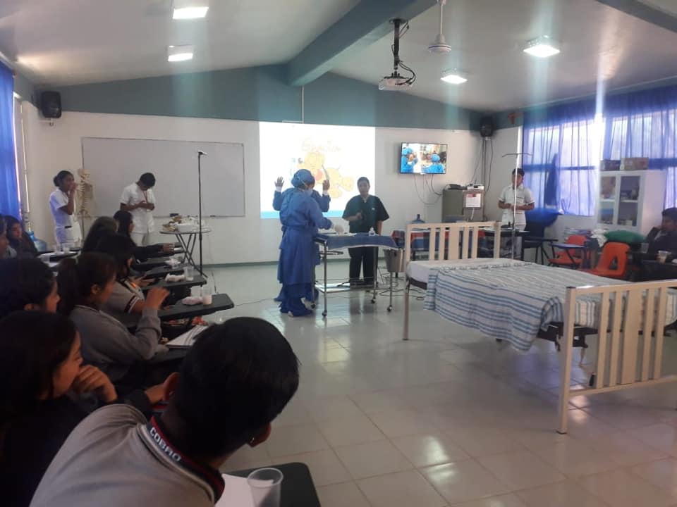

Plantel 42 "Huitzo"
Colegio de Bachilleres del Estado de Oaxaca
PLAN DE ESTUDIOS EN ÁREAS BASICAS
De primero hasta sexto semestre los alumnos llevan materias basicas, estas los ayudan a desarrollar el futuro personal y profesional de cada uno de los estudiantes a partir de conocimientos basicos generales.
MATERIAS BASICAS
PRIMER SEMESTRE
- Taller de Lectura y Redacción I
- Matematicas I
- Informatica I
- Quimica I
- Ingles I
- Etica I
- Metodologia de la Investigación
- Orientación Educativa
- Desarrollo Humano
SEGUNDO SEMESTRE
- Taller de Lectura y Redacción II
- Matematicas II
- Informatica II
- Quimica II
- Ingles II
- Etica II
- Ciencias Sociales
- Orientación Educativa
- Desarrollo Humano
TERCER SEMESTRE
- Literatura I
- Matematicas III
- Narrativa Breve
- Biologia I
- Ingles III
- Historia de México I
- Fisica I
- Orientación Educativa
- Desarrollo Humano
- + materias de capacitación
CUARTO SEMESTRE
- Literatura II
- Matematicas IV
- Etimologias
- Biologia II
- Ingles IV
- Historia de México II
- Fisica II
- Orientación Educativa
- Desarrollo Humano
- + materias de capacitación
QUINTO SEMESTRE
- Geografia
- Estructura Socio Economica de México
- Orientación Educativa
- Desarrollo Humano
- + materias de capacitación
- + materias de propedeutico
SEXTO SEMESTRE
- Ecología
- Historia Universal Contemporánea
- Filosofía
- Orientación Educativa
- Desarrollo Humano
- + materias de capacitación
- + materias de propedeutico
PLAN DE ESTUDIOS EN ÁREAS DE CAPACITACIÓN
En segundo semestre los alumnos eligen una capacitación que posteriormente en tercer semestre tendran que llevar. En el COBAO 42 HUITZO contamos con 4 increibles capacitaciones que forman un nucleo de aprendizaje.
LAS CAPACITACIONES SE DIVIDEN EN 4 MODULOS, CADA SEMESTRE LOS ALUMNOS LLEVAN UN MODULO EL CUAL CONSTA DE 2 MATERIAS.
CAPACITACIONES Y SUS MATERIAS
TECNOLOGIAS DE LA INFORMACIÓN Y LA COMUNICACIÓN
-

-

-

-

MODULO UNO; TERCER SEMESTRE "CULTURA EMPRENDEDORA"
- MATERIA 1: Gestión de Archivos de Texto
- MATERIA 2: Hojas de Calculo Aplicado
MODULO DOS; CUARTO SEMESTRE "LEGALIDAD EMPRESARIAL Y MERCADOTECNIA"
- MATERIA 1: Comunidades Virtuales
- MATERIA 2: Mantenimiento y Redes de Computo
MODULO TRES; QUINTO SEMESTRE "GESTION FINANCIERA Y DE VENTAS"
- MATERIA 1: Sistemas de Información
- MATERIA 2: Programación
MODULO CUATRO; SEXTO SEMESTRE "COMUNICACIÓN DE LA EMPRESA Y PROYECTO EMPRENDEDOR"
- MATERIA 1: Paginas Web
- MATERIA 2: Diseño Digital
DIBUJO ARQUITECTONICO Y DE CONSTRUCCIÓN
MODULO UNO; TERCER SEMESTRE "DIBUJO ARQUITECTONICO I"
- MATERIA 1: Principios Generales del Dibujo tecnico
- MATERIA 2: Elementos Basicos de Geometria Descriptiva
MODULO DOS; CUARTO SEMESTRE "DIBUJO ARQUITECTONICO II"
- MATERIA 1: Elementos basicos de Topografia
- MATERIA 2: Planos Arquitectonicos
MODULO TRES; QUINTO SEMESTRE "GESTION FINANCIERA Y DE VENTAS"
- MATERIA 1: Revestimientos Constructivos
- MATERIA 2: Planos estructurales y de instalaciones
MODULO CUATRO; SEXTO SEMESTRE "PROYECTO ARQUITECTONICO"
- MATERIA 1: Materiales, Mezclas y Elementos de Construccion
- MATERIA 2: Proyecto Arquitectonico Integrador
ADMINISTRACIÓN
MODULO UNO; TERCER SEMESTRE "CULTURA EMPRENDEDORA"
- MATERIA 1: Emprendimiento y Empresa
- MATERIA 2: Proceso Administrativo
MODULO DOS; CUARTO SEMESTRE "LEGALIDAD EMPRESARIAL Y MERCADOTECNIA"
- MATERIA 1: Legalidad Empresarial
- MATERIA 2: Mercadotecnia
MODULO TRES; QUINTO SEMESTRE "GESTION FINANCIERA Y DE VENTAS"
- MATERIA 1: Finanzas
- MATERIA 2: Ventas y Difusión
MODULO CUATRO; SEXTO SEMESTRE "COMUNICACIÓN DE LA EMPRESA Y PROYECTO EMPRENDEDOR"
- MATERIA 1: Comunicación de la Empresa
- MATERIA 2: Proyecto Emprendedor
HIGIENE Y SALUD COMUNITARIA
-
-

-

-

MODULO UNO; TERCER SEMESTRE
- MATERIA 1:Bases Anatomicas y F.
- MATERIA 2: Epidemiología
MODULO DOS; CUARTO SEMESTRE
- MATERIA 1: Nutrición
- MATERIA 2: Salud Publica
MODULO TRES; QUINTO SEMESTRE
- MATERIA 1: Prog. Salud P.
- MATERIA 2: E. de Comunidad
MODULO CUATRO; SEXTO SEMESTRE
- MATERIA 1: P. Epidemiología
- MATERIA 2: P. de Enfermeria
PLAN DE ESTUDIOS EN ÁREAS PROPEDEUTICAS
En quinto y sexto semestre los alumnos llevan un área propedeutica, esta es a su gusto y elección, el COBAO 42 HUITZO cuenta con 4 propedeuticos.
LOS PROPEDEUTICOS CONSTAN DE 4 MATERIAS POR SEMESTRE, ESTAS MATERIAS LAS DEFINE EL PROPEDEUTICO EN EL QUE TE HAYAS INTEGRADO.
PROPEDEUTICOS Y SUS MATERIAS
FISICO-MATEMATICO
QUINTO SEMESTRE
- Probabilidad y Estadistica I
- Calculo Diferencial
- Temas Selectos de Fisica I
- Fisicoquimica
SEXTO SEMESTRE
- Probabilidad y Estadistica II
- Calculo Integral
- Temas Selectos de Fisica II
- Temas Selectos de Matematicas
ECONOMICO-ADMINISTRATIVO
QUINTO SEMESTRE
- Probabilidad y Estadistica I
- Matematicas Financieras
- Economía I
- Ciencias de la Comunicacíon I
SEXTO SEMESTRE
- Probabilidad y Estadistica II
- Economia II
- Temas Selectos de Derecho
- Ciencias de la Comunicacíon II
QUIMICO-BIOLOGO
QUINTO SEMESTRE
- Temas Selectos de Quimíca I
- Temas Selectos de Biología I
- Fisicoquimica
- Psicología I
SEXTO SEMESTRE
- Temas Selectos de Quimíca II
- Temas Selectos de Biología II
- Bioquimica
- Psicología II
HUMANIDADES-CIENCIAS SOCIALES
QUINTO SEMESTRE
- Temas Selectos de Filosofia I
- Economía I
- Sociología I
- Derecho I
SEXTO SEMESTRE
- Temas Selectos de Filosofia II
- Economía II
- Sociología II
- Derecho II